Wohnhaus
Ein Haus, das zu Ihnen passt.
Modern, Landhaus oder Klinker mit Satteldach: Wir planen und bauen in jedem Stil, aus einer Hand. Wählen Sie eine Richtung, und sehen Sie Beispiele aus unseren Projekten.
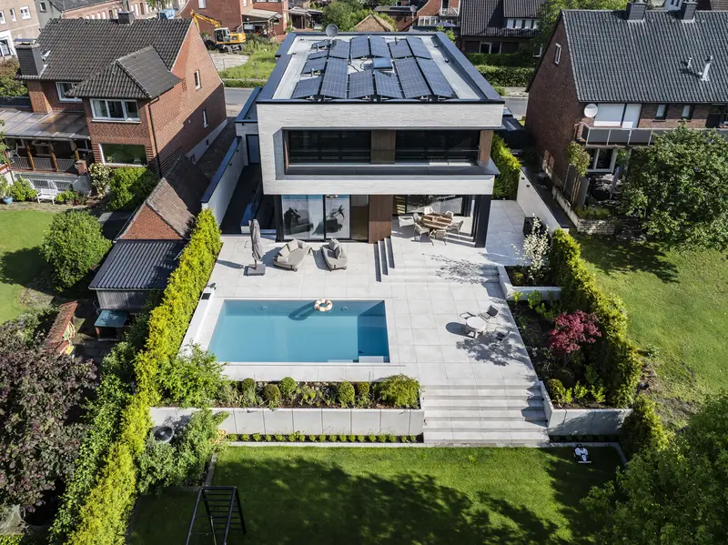
Offen zum Garten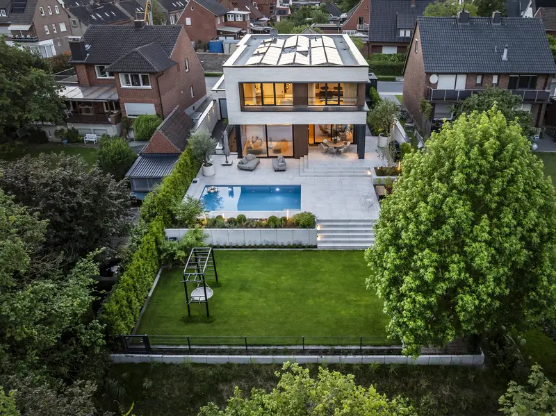
Offen zum Garten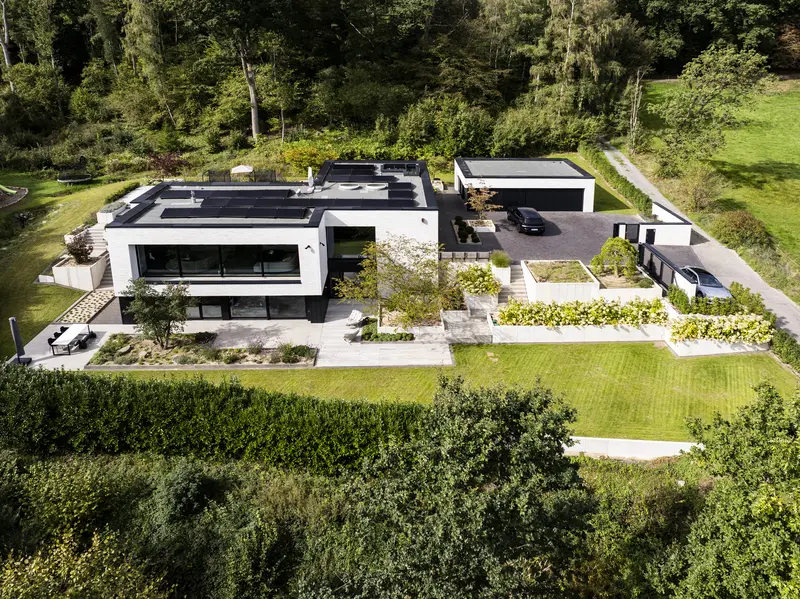
Neues Leben am Hang Neues Leben am Hang
Neues Leben am Hang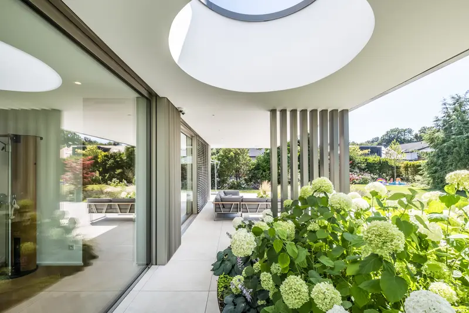
Mit der Umgebung im Dialog Mit der Umgebung im Dialog
Mit der Umgebung im Dialog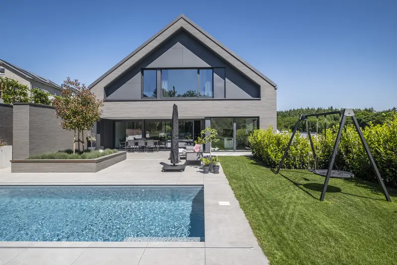
Schönheit am Hang Schönheit am Hang
Schönheit am Hang Sichtachsen des Wohlfühlens
Sichtachsen des Wohlfühlens Sichtachsen des Wohlfühlens
Sichtachsen des Wohlfühlens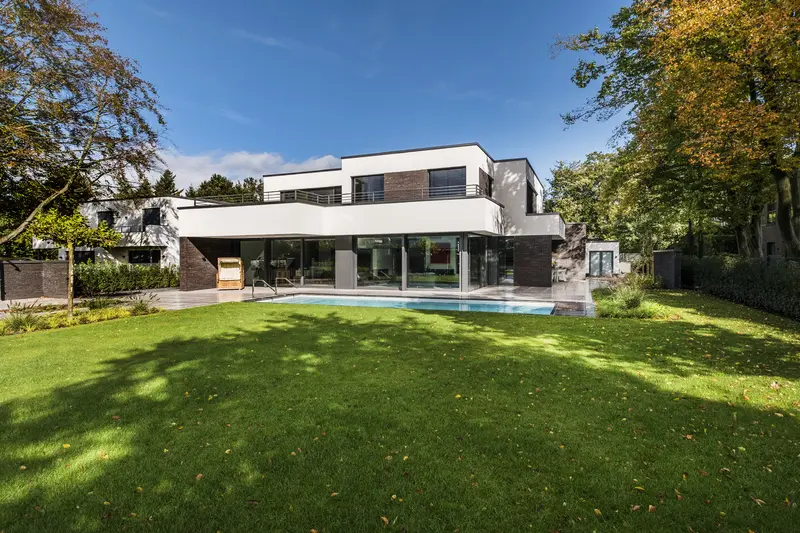
Raum für Wohnen und Wellness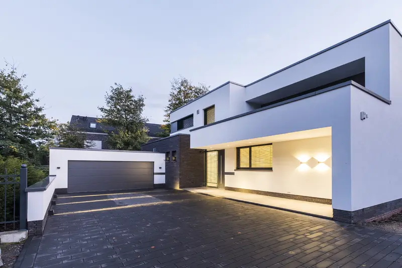
Raum für Wohnen und Wellness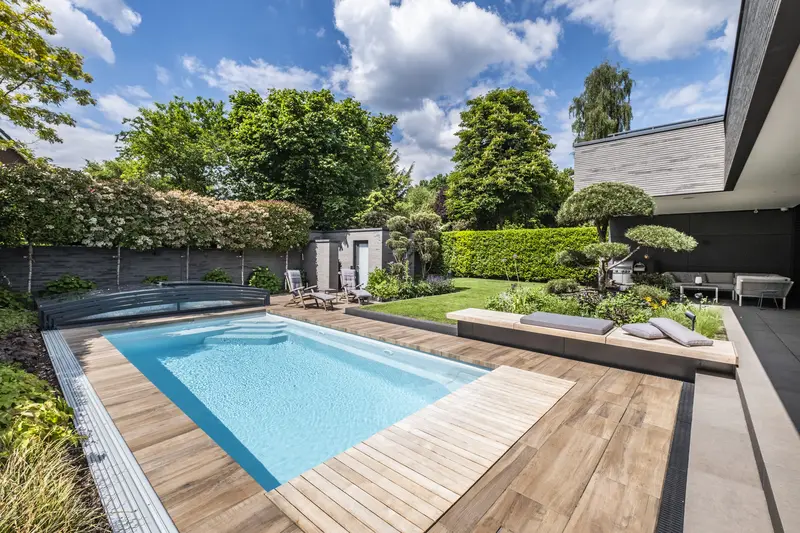
Architektur mit klarer Linie Architektur mit klarer Linie
Architektur mit klarer Linie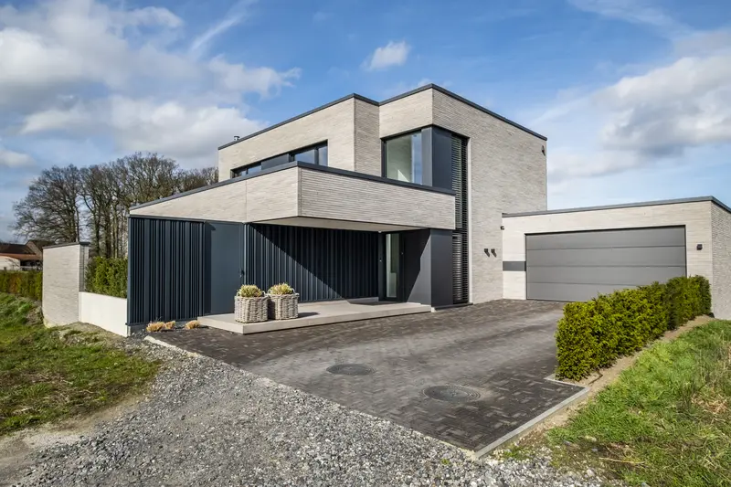
Maßgeschneidertes Zuhause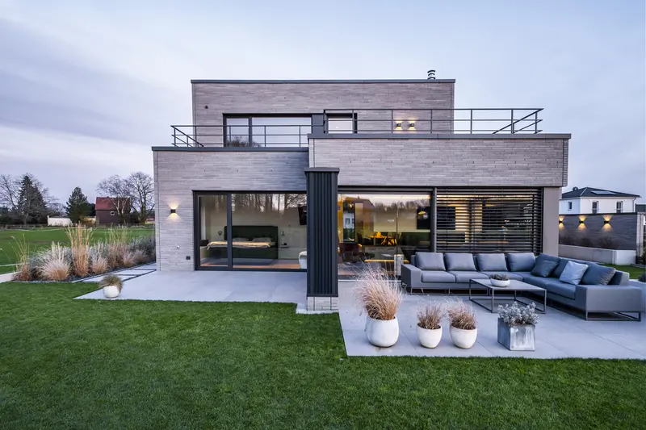
Maßgeschneidertes Zuhause Wohnen um den Innenhof
Wohnen um den Innenhof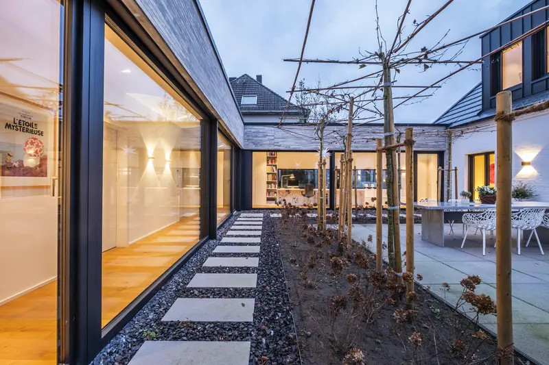
Wohnen um den Innenhof Architektur mit fließenden Übergängen
Architektur mit fließenden Übergängen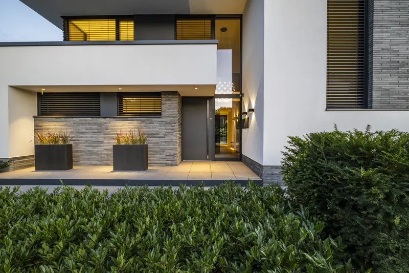
Architektur mit fließenden Übergängen


Entwurf, Planung und Bau kommen bei uns aus einem Haus: eigene Architektinnen, Bauingenieure, Bauleiter, Poliere und Maurer. Alle Schritte auf der Startseite
Ihr Haus.
Erzählen Sie uns, was Sie vorhaben. Alles Weitere besprechen wir persönlich.
Wohnhaus anfragenOder anrufen: 05973 / 90 923 0